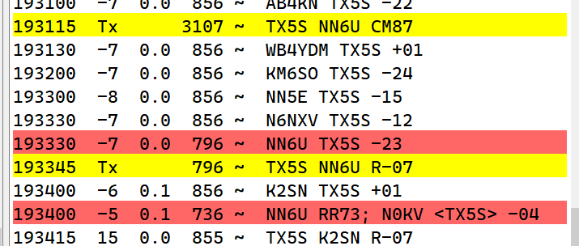

Yes, they do plan to do RTTY; Chris N6WM is a big RTTY fan. Check out
https://clip.pdxg.net/354-2/ for the band plan including planned RTTY frequencies.
For the 10m pileup, I finally got through by calling high (3100 Hz). They have DSP radios with broad Rx bandwidth; no need to stick to the crowded lower frequencies. They picked me up
there even at -23 with my 90W into an EFHW, which would have been swamped in the lower audio frequencies. Give that a try if you’re still calling.

From: Chat <chat-bounces@ncdxc.org> On Behalf Of
bill sirvatka via Chat
Sent: Tuesday, January 23, 2024 11:29
To: Andrew Calman <acalmanmd@gmail.com>; Chat Ncdxc <chat@ncdxc.org>
Subject: Re: [NCDXC Chat] TX5S
I often see that once the excitement subsides, slots are all filled then they switch things up a bit. For example. They'll go to FT4, RTTY and so forth. Do we know if they will
do this as well? I see PSK listed but I am curious.
On Tuesday, January 23, 2024 at 11:25:17 AM PST, Andrew Calman via Chat <chat@ncdxc.org> wrote:
Also, this is a 14 day DXpedition. In a few days, they will be begging for QSOs. Unless you are determined to be on the leaderboard, fortune favors the patient.
On Tue, Jan 23, 2024 at 11:19 AM Gabriel AJ6X via Chat <chat@ncdxc.org> wrote:
TX5S is probably one of the worst examples: (1) too many chasers at the same time in a limited bandwidth; and (2) too easy to call endlessly. These two factors conspire
to make it unpleasant.
I also got my TX5S contacts by finding an empty spot on the waterfall, clicking on the “Enable Tx”, walking off, and repeating once in a while… not the most pleasant
experience.
Most other DXpeditions in recent memory felt better than this. But the contacts still count for DXCC!
Good DX,
Gabriel AJ6X
I am by no means an FT8 basher, but boy! there's so little operator skill in this mode.
I waited more than one hour on 80m FT8 last night, doing all those things that we believe help (find a clear spot, which is bogus because it's MY clear spot, not necessarily
theirs), etc. In the meantime, I took a break, went to 40m CW and in 5 minutes I found the op modus operandi and got the Q. Went back to 80m FT8 and eventually I made it through.
The only operator skill I can think of is having a friend at the other side who can get you in the queue faster
🙂
Don't throw stones at me, I believe in FT8. It's just so helpless.
Here’s something that’s absolutely hilarious, at least, in my opinion.
I have been calling Clipperton for probably 2 1/2 hours on 10 m using my stepper, three element in 180° mode.
I’ve been moving around all over the spectrum making sure I was calling in an open spot.
After my transmitter timed out, I decided to rotate the antenna 180° and take it out of reverse mode.
While I was in the backyard making sure the antenna was rotating correctly, I came back into the shack to find that I had worked Clipperton, while I was gone, off the side of my beam.
Apparently I was in the queue when my transmitter timed out and, fortunately, foxhound mode, will reactivate your transmitter if you get a response.
It’s better to be lucky than good.
73 es DX,
Bob/AA5VB
Robert L. Chortek
_______________________________________________
Chat mailing list
Chat@ncdxc.org
http://mail.ncdxc.org/mailman/listinfo/chat_ncdxc.org
_______________________________________________
Chat mailing list
Chat@ncdxc.org
http://mail.ncdxc.org/mailman/listinfo/chat_ncdxc.org
|